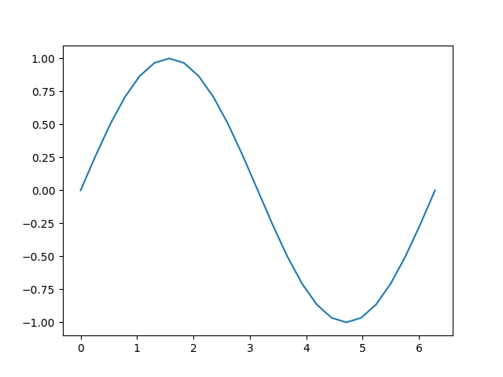

Note
Click here to download the full example code
Introduction || Tensors || Autograd || Building Models || TensorBoard Support || Training Models || Model Understanding
The Fundamentals of Autograd¶
Follow along with the video below or on youtube.
PyTorch’s Autograd feature is part of what make PyTorch flexible and fast for building machine learning projects. It allows for the rapid and easy computation of multiple partial derivatives (also referred to as gradients) over a complex computation. This operation is central to backpropagation-based neural network learning.
The power of autograd comes from the fact that it traces your computation dynamically at runtime, meaning that if your model has decision branches, or loops whose lengths are not known until runtime, the computation will still be traced correctly, and you’ll get correct gradients to drive learning. This, combined with the fact that your models are built in Python, offers far more flexibility than frameworks that rely on static analysis of a more rigidly-structured model for computing gradients.
What Do We Need Autograd For?¶
A machine learning model is a function, with inputs and outputs. For this discussion, we’ll treat the inputs as an i-dimensional vector \(\vec{x}\), with elements \(x_{i}\). We can then express the model, M, as a vector-valued function of the input: \(\vec{y} = \vec{M}(\vec{x})\). (We treat the value of M’s output as a vector because in general, a model may have any number of outputs.)
Since we’ll mostly be discussing autograd in the context of training, our output of interest will be the model’s loss. The loss function L(\(\vec{y}\)) = L(\(\vec{M}\)(\(\vec{x}\))) is a single-valued scalar function of the model’s output. This function expresses how far off our model’s prediction was from a particular input’s ideal output. Note: After this point, we will often omit the vector sign where it should be contextually clear - e.g., \(y\) instead of \(\vec y\).
In training a model, we want to minimize the loss. In the idealized case of a perfect model, that means adjusting its learning weights - that is, the adjustable parameters of the function - such that loss is zero for all inputs. In the real world, it means an iterative process of nudging the learning weights until we see that we get a tolerable loss for a wide variety of inputs.
How do we decide how far and in which direction to nudge the weights? We want to minimize the loss, which means making its first derivative with respect to the input equal to 0: \(\frac{\partial L}{\partial x} = 0\).
Recall, though, that the loss is not directly derived from the input, but a function of the model’s output (which is a function of the input directly), \(\frac{\partial L}{\partial x}\) = \(\frac{\partial {L({\vec y})}}{\partial x}\). By the chain rule of differential calculus, we have \(\frac{\partial {L({\vec y})}}{\partial x}\) = \(\frac{\partial L}{\partial y}\frac{\partial y}{\partial x}\) = \(\frac{\partial L}{\partial y}\frac{\partial M(x)}{\partial x}\).
\(\frac{\partial M(x)}{\partial x}\) is where things get complex. The partial derivatives of the model’s outputs with respect to its inputs, if we were to expand the expression using the chain rule again, would involve many local partial derivatives over every multiplied learning weight, every activation function, and every other mathematical transformation in the model. The full expression for each such partial derivative is the sum of the products of the local gradient of every possible path through the computation graph that ends with the variable whose gradient we are trying to measure.
In particular, the gradients over the learning weights are of interest to us - they tell us what direction to change each weight to get the loss function closer to zero.
Since the number of such local derivatives (each corresponding to a separate path through the model’s computation graph) will tend to go up exponentially with the depth of a neural network, so does the complexity in computing them. This is where autograd comes in: It tracks the history of every computation. Every computed tensor in your PyTorch model carries a history of its input tensors and the function used to create it. Combined with the fact that PyTorch functions meant to act on tensors each have a built-in implementation for computing their own derivatives, this greatly speeds the computation of the local derivatives needed for learning.
A Simple Example¶
That was a lot of theory - but what does it look like to use autograd in practice?
Let’s start with a straightforward example. First, we’ll do some imports to let us graph our results:
# %matplotlib inline
import torch
import matplotlib.pyplot as plt
import matplotlib.ticker as ticker
import math
Next, we’ll create an input tensor full of evenly spaced values on the
interval \([0, 2{\pi}]\), and specify requires_grad=True. (Like
most functions that create tensors, torch.linspace() accepts an
optional requires_grad option.) Setting this flag means that in
every computation that follows, autograd will be accumulating the
history of the computation in the output tensors of that computation.
a = torch.linspace(0., 2. * math.pi, steps=25, requires_grad=True)
print(a)
tensor([0.0000, 0.2618, 0.5236, 0.7854, 1.0472, 1.3090, 1.5708, 1.8326, 2.0944,
2.3562, 2.6180, 2.8798, 3.1416, 3.4034, 3.6652, 3.9270, 4.1888, 4.4506,
4.7124, 4.9742, 5.2360, 5.4978, 5.7596, 6.0214, 6.2832],
requires_grad=True)
Next, we’ll perform a computation, and plot its output in terms of its inputs:
[<matplotlib.lines.Line2D object at 0x7f3d314952a0>]
Let’s have a closer look at the tensor b. When we print it, we see
an indicator that it is tracking its computation history:
print(b)
tensor([ 0.0000e+00, 2.5882e-01, 5.0000e-01, 7.0711e-01, 8.6603e-01,
9.6593e-01, 1.0000e+00, 9.6593e-01, 8.6603e-01, 7.0711e-01,
5.0000e-01, 2.5882e-01, -8.7423e-08, -2.5882e-01, -5.0000e-01,
-7.0711e-01, -8.6603e-01, -9.6593e-01, -1.0000e+00, -9.6593e-01,
-8.6603e-01, -7.0711e-01, -5.0000e-01, -2.5882e-01, 1.7485e-07],
grad_fn=<SinBackward0>)
This grad_fn gives us a hint that when we execute the
backpropagation step and compute gradients, we’ll need to compute the
derivative of \(\sin(x)\) for all this tensor’s inputs.
Let’s perform some more computations:
tensor([ 0.0000e+00, 5.1764e-01, 1.0000e+00, 1.4142e+00, 1.7321e+00,
1.9319e+00, 2.0000e+00, 1.9319e+00, 1.7321e+00, 1.4142e+00,
1.0000e+00, 5.1764e-01, -1.7485e-07, -5.1764e-01, -1.0000e+00,
-1.4142e+00, -1.7321e+00, -1.9319e+00, -2.0000e+00, -1.9319e+00,
-1.7321e+00, -1.4142e+00, -1.0000e+00, -5.1764e-01, 3.4969e-07],
grad_fn=<MulBackward0>)
tensor([ 1.0000e+00, 1.5176e+00, 2.0000e+00, 2.4142e+00, 2.7321e+00,
2.9319e+00, 3.0000e+00, 2.9319e+00, 2.7321e+00, 2.4142e+00,
2.0000e+00, 1.5176e+00, 1.0000e+00, 4.8236e-01, -3.5763e-07,
-4.1421e-01, -7.3205e-01, -9.3185e-01, -1.0000e+00, -9.3185e-01,
-7.3205e-01, -4.1421e-01, 4.7684e-07, 4.8236e-01, 1.0000e+00],
grad_fn=<AddBackward0>)
Finally, let’s compute a single-element output. When you call
.backward() on a tensor with no arguments, it expects the calling
tensor to contain only a single element, as is the case when computing a
loss function.
tensor(25., grad_fn=<SumBackward0>)
Each grad_fn stored with our tensors allows you to walk the
computation all the way back to its inputs with its next_functions
property. We can see below that drilling down on this property on d
shows us the gradient functions for all the prior tensors. Note that
a.grad_fn is reported as None, indicating that this was an input
to the function with no history of its own.
print('d:')
print(d.grad_fn)
print(d.grad_fn.next_functions)
print(d.grad_fn.next_functions[0][0].next_functions)
print(d.grad_fn.next_functions[0][0].next_functions[0][0].next_functions)
print(d.grad_fn.next_functions[0][0].next_functions[0][0].next_functions[0][0].next_functions)
print('\nc:')
print(c.grad_fn)
print('\nb:')
print(b.grad_fn)
print('\na:')
print(a.grad_fn)
d:
<AddBackward0 object at 0x7f3d305efac0>
((<MulBackward0 object at 0x7f3d305ef970>, 0), (None, 0))
((<SinBackward0 object at 0x7f3d305ef970>, 0), (None, 0))
((<AccumulateGrad object at 0x7f3d305efac0>, 0),)
()
c:
<MulBackward0 object at 0x7f3d305ef970>
b:
<SinBackward0 object at 0x7f3d305ef970>
a:
None
With all this machinery in place, how do we get derivatives out? You
call the backward() method on the output, and check the input’s
grad property to inspect the gradients:
out.backward()
print(a.grad)
plt.plot(a.detach(), a.grad.detach())
tensor([ 2.0000e+00, 1.9319e+00, 1.7321e+00, 1.4142e+00, 1.0000e+00,
5.1764e-01, -8.7423e-08, -5.1764e-01, -1.0000e+00, -1.4142e+00,
-1.7321e+00, -1.9319e+00, -2.0000e+00, -1.9319e+00, -1.7321e+00,
-1.4142e+00, -1.0000e+00, -5.1764e-01, 2.3850e-08, 5.1764e-01,
1.0000e+00, 1.4142e+00, 1.7321e+00, 1.9319e+00, 2.0000e+00])
[<matplotlib.lines.Line2D object at 0x7f3d30626f20>]
Recall the computation steps we took to get here:
Adding a constant, as we did to compute d, does not change the
derivative. That leaves \(c = 2 * b = 2 * \sin(a)\), the derivative
of which should be \(2 * \cos(a)\). Looking at the graph above,
that’s just what we see.
Be aware that only leaf nodes of the computation have their gradients
computed. If you tried, for example, print(c.grad) you’d get back
None. In this simple example, only the input is a leaf node, so only
it has gradients computed.
Autograd in Training¶
We’ve had a brief look at how autograd works, but how does it look when it’s used for its intended purpose? Let’s define a small model and examine how it changes after a single training batch. First, define a few constants, our model, and some stand-ins for inputs and outputs:
BATCH_SIZE = 16
DIM_IN = 1000
HIDDEN_SIZE = 100
DIM_OUT = 10
class TinyModel(torch.nn.Module):
def __init__(self):
super(TinyModel, self).__init__()
self.layer1 = torch.nn.Linear(DIM_IN, HIDDEN_SIZE)
self.relu = torch.nn.ReLU()
self.layer2 = torch.nn.Linear(HIDDEN_SIZE, DIM_OUT)
def forward(self, x):
x = self.layer1(x)
x = self.relu(x)
x = self.layer2(x)
return x
some_input = torch.randn(BATCH_SIZE, DIM_IN, requires_grad=False)
ideal_output = torch.randn(BATCH_SIZE, DIM_OUT, requires_grad=False)
model = TinyModel()
One thing you might notice is that we never specify
requires_grad=True for the model’s layers. Within a subclass of
torch.nn.Module, it’s assumed that we want to track gradients on the
layers’ weights for learning.
If we look at the layers of the model, we can examine the values of the weights, and verify that no gradients have been computed yet:
print(model.layer2.weight[0][0:10]) # just a small slice
print(model.layer2.weight.grad)
tensor([ 0.0920, 0.0916, 0.0121, 0.0083, -0.0055, 0.0367, 0.0221, -0.0276,
-0.0086, 0.0157], grad_fn=<SliceBackward0>)
None
Let’s see how this changes when we run through one training batch. For a
loss function, we’ll just use the square of the Euclidean distance
between our prediction and the ideal_output, and we’ll use a
basic stochastic gradient descent optimizer.
optimizer = torch.optim.SGD(model.parameters(), lr=0.001)
prediction = model(some_input)
loss = (ideal_output - prediction).pow(2).sum()
print(loss)
tensor(211.2634, grad_fn=<SumBackward0>)
Now, let’s call loss.backward() and see what happens:
loss.backward()
print(model.layer2.weight[0][0:10])
print(model.layer2.weight.grad[0][0:10])
tensor([ 0.0920, 0.0916, 0.0121, 0.0083, -0.0055, 0.0367, 0.0221, -0.0276,
-0.0086, 0.0157], grad_fn=<SliceBackward0>)
tensor([12.8997, 2.9572, 2.3021, 1.8887, 5.0710, 7.3192, 3.5169, 2.4319,
0.1732, -5.3835])
We can see that the gradients have been computed for each learning weight, but the weights remain unchanged, because we haven’t run the optimizer yet. The optimizer is responsible for updating model weights based on the computed gradients.
optimizer.step()
print(model.layer2.weight[0][0:10])
print(model.layer2.weight.grad[0][0:10])
tensor([ 0.0791, 0.0886, 0.0098, 0.0064, -0.0106, 0.0293, 0.0186, -0.0300,
-0.0088, 0.0211], grad_fn=<SliceBackward0>)
tensor([12.8997, 2.9572, 2.3021, 1.8887, 5.0710, 7.3192, 3.5169, 2.4319,
0.1732, -5.3835])
You should see that layer2’s weights have changed.
One important thing about the process: After calling
optimizer.step(), you need to call optimizer.zero_grad(), or
else every time you run loss.backward(), the gradients on the
learning weights will accumulate:
print(model.layer2.weight.grad[0][0:10])
for i in range(0, 5):
prediction = model(some_input)
loss = (ideal_output - prediction).pow(2).sum()
loss.backward()
print(model.layer2.weight.grad[0][0:10])
optimizer.zero_grad(set_to_none=False)
print(model.layer2.weight.grad[0][0:10])
tensor([12.8997, 2.9572, 2.3021, 1.8887, 5.0710, 7.3192, 3.5169, 2.4319,
0.1732, -5.3835])
tensor([ 19.2095, -15.9459, 8.3306, 11.5096, 9.5471, 0.5391, -0.3370,
8.6386, -2.5141, -30.1419])
tensor([0., 0., 0., 0., 0., 0., 0., 0., 0., 0.])
After running the cell above, you should see that after running
loss.backward() multiple times, the magnitudes of most of the
gradients will be much larger. Failing to zero the gradients before
running your next training batch will cause the gradients to blow up in
this manner, causing incorrect and unpredictable learning results.
Turning Autograd Off and On¶
There are situations where you will need fine-grained control over whether autograd is enabled. There are multiple ways to do this, depending on the situation.
The simplest is to change the requires_grad flag on a tensor
directly:
tensor([[1., 1., 1.],
[1., 1., 1.]], requires_grad=True)
tensor([[2., 2., 2.],
[2., 2., 2.]], grad_fn=<MulBackward0>)
tensor([[2., 2., 2.],
[2., 2., 2.]])
In the cell above, we see that b1 has a grad_fn (i.e., a traced
computation history), which is what we expect, since it was derived from
a tensor, a, that had autograd turned on. When we turn off autograd
explicitly with a.requires_grad = False, computation history is no
longer tracked, as we see when we compute b2.
If you only need autograd turned off temporarily, a better way is to use
the torch.no_grad():
tensor([[5., 5., 5.],
[5., 5., 5.]], grad_fn=<AddBackward0>)
tensor([[5., 5., 5.],
[5., 5., 5.]])
tensor([[6., 6., 6.],
[6., 6., 6.]], grad_fn=<MulBackward0>)
torch.no_grad() can also be used as a function or method decorator:
tensor([[5., 5., 5.],
[5., 5., 5.]], grad_fn=<AddBackward0>)
tensor([[5., 5., 5.],
[5., 5., 5.]])
There’s a corresponding context manager, torch.enable_grad(), for
turning autograd on when it isn’t already. It may also be used as a
decorator.
Finally, you may have a tensor that requires gradient tracking, but you
want a copy that does not. For this we have the Tensor object’s
detach() method - it creates a copy of the tensor that is detached
from the computation history:
tensor([0.0670, 0.3890, 0.7264, 0.3559, 0.6584], requires_grad=True)
tensor([0.0670, 0.3890, 0.7264, 0.3559, 0.6584])
We did this above when we wanted to graph some of our tensors. This is
because matplotlib expects a NumPy array as input, and the implicit
conversion from a PyTorch tensor to a NumPy array is not enabled for
tensors with requires_grad=True. Making a detached copy lets us move
forward.
Autograd and In-place Operations¶
In every example in this notebook so far, we’ve used variables to
capture the intermediate values of a computation. Autograd needs these
intermediate values to perform gradient computations. For this reason,
you must be careful about using in-place operations when using
autograd. Doing so can destroy information you need to compute
derivatives in the backward() call. PyTorch will even stop you if
you attempt an in-place operation on leaf variable that requires
autograd, as shown below.
Note
The following code cell throws a runtime error. This is expected.
a = torch.linspace(0., 2. * math.pi, steps=25, requires_grad=True)
torch.sin_(a)
Autograd Profiler¶
Autograd tracks every step of your computation in detail. Such a computation history, combined with timing information, would make a handy profiler - and autograd has that feature baked in. Here’s a quick example usage:
device = torch.device('cpu')
run_on_gpu = False
if torch.cuda.is_available():
device = torch.device('cuda')
run_on_gpu = True
x = torch.randn(2, 3, requires_grad=True)
y = torch.rand(2, 3, requires_grad=True)
z = torch.ones(2, 3, requires_grad=True)
with torch.autograd.profiler.profile(use_cuda=run_on_gpu) as prf:
for _ in range(1000):
z = (z / x) * y
print(prf.key_averages().table(sort_by='self_cpu_time_total'))
------------------------------------ ------------ ------------ ------------ ------------ ------------ ------------ ------------ ------------ ------------ ------------
Name Self CPU % Self CPU CPU total % CPU total CPU time avg Self CUDA Self CUDA % CUDA total CUDA time avg # of Calls
------------------------------------ ------------ ------------ ------------ ------------ ------------ ------------ ------------ ------------ ------------ ------------
cudaEventRecord 50.62% 12.120ms 50.62% 12.120ms 3.030us 0.000us 0.00% 0.000us 0.000us 4000
aten::div 25.05% 5.999ms 25.06% 6.000ms 6.000us 17.299ms 50.24% 17.299ms 17.299us 1000
aten::mul 23.31% 5.581ms 23.31% 5.581ms 5.581us 17.136ms 49.76% 17.136ms 17.136us 1000
cudaGetDeviceProperties_v2 0.88% 210.000us 0.88% 210.000us 210.000us 0.000us 0.00% 0.000us 0.000us 1
cudaDeviceSynchronize 0.08% 19.000us 0.08% 19.000us 19.000us 0.000us 0.00% 0.000us 0.000us 1
cudaStreamIsCapturing 0.04% 9.000us 0.04% 9.000us 2.250us 0.000us 0.00% 0.000us 0.000us 4
cudaDeviceGetStreamPriorityRange 0.02% 4.000us 0.02% 4.000us 4.000us 0.000us 0.00% 0.000us 0.000us 1
cudaGetDeviceCount 0.01% 2.000us 0.01% 2.000us 1.000us 0.000us 0.00% 0.000us 0.000us 2
------------------------------------ ------------ ------------ ------------ ------------ ------------ ------------ ------------ ------------ ------------ ------------
Self CPU time total: 23.944ms
Self CUDA time total: 34.435ms
The profiler can also label individual sub-blocks of code, break out the data by input tensor shape, and export data as a Chrome tracing tools file. For full details of the API, see the documentation.
Advanced Topic: More Autograd Detail and the High-Level API¶
If you have a function with an n-dimensional input and m-dimensional output, \(\vec{y}=f(\vec{x})\), the complete gradient is a matrix of the derivative of every output with respect to every input, called the Jacobian:
If you have a second function, \(l=g\left(\vec{y}\right)\) that takes m-dimensional input (that is, the same dimensionality as the output above), and returns a scalar output, you can express its gradients with respect to \(\vec{y}\) as a column vector, \(v=\left(\begin{array}{ccc}\frac{\partial l}{\partial y_{1}} & \cdots & \frac{\partial l}{\partial y_{m}}\end{array}\right)^{T}\) - which is really just a one-column Jacobian.
More concretely, imagine the first function as your PyTorch model (with potentially many inputs and many outputs) and the second function as a loss function (with the model’s output as input, and the loss value as the scalar output).
If we multiply the first function’s Jacobian by the gradient of the second function, and apply the chain rule, we get:
Note: You could also use the equivalent operation \(v^{T}\cdot J\), and get back a row vector.
The resulting column vector is the gradient of the second function with respect to the inputs of the first - or in the case of our model and loss function, the gradient of the loss with respect to the model inputs.
``torch.autograd`` is an engine for computing these products. This is how we accumulate the gradients over the learning weights during the backward pass.
For this reason, the backward() call can also take an optional
vector input. This vector represents a set of gradients over the tensor,
which are multiplied by the Jacobian of the autograd-traced tensor that
precedes it. Let’s try a specific example with a small vector:
x = torch.randn(3, requires_grad=True)
y = x * 2
while y.data.norm() < 1000:
y = y * 2
print(y)
tensor([ 299.4868, 425.4009, -1082.9885], grad_fn=<MulBackward0>)
If we tried to call y.backward() now, we’d get a runtime error and a
message that gradients can only be implicitly computed for scalar
outputs. For a multi-dimensional output, autograd expects us to provide
gradients for those three outputs that it can multiply into the
Jacobian:
v = torch.tensor([0.1, 1.0, 0.0001], dtype=torch.float) # stand-in for gradients
y.backward(v)
print(x.grad)
tensor([1.0240e+02, 1.0240e+03, 1.0240e-01])
(Note that the output gradients are all related to powers of two - which we’d expect from a repeated doubling operation.)
The High-Level API¶
There is an API on autograd that gives you direct access to important differential matrix and vector operations. In particular, it allows you to calculate the Jacobian and the Hessian matrices of a particular function for particular inputs. (The Hessian is like the Jacobian, but expresses all partial second derivatives.) It also provides methods for taking vector products with these matrices.
Let’s take the Jacobian of a simple function, evaluated for a 2 single-element inputs:
def exp_adder(x, y):
return 2 * x.exp() + 3 * y
inputs = (torch.rand(1), torch.rand(1)) # arguments for the function
print(inputs)
torch.autograd.functional.jacobian(exp_adder, inputs)
(tensor([0.7212]), tensor([0.2079]))
(tensor([[4.1137]]), tensor([[3.]]))
If you look closely, the first output should equal \(2e^x\) (since the derivative of \(e^x\) is \(e^x\)), and the second value should be 3.
You can, of course, do this with higher-order tensors:
inputs = (torch.rand(3), torch.rand(3)) # arguments for the function
print(inputs)
torch.autograd.functional.jacobian(exp_adder, inputs)
(tensor([0.2080, 0.2604, 0.4415]), tensor([0.5220, 0.9867, 0.4288]))
(tensor([[2.4623, 0.0000, 0.0000],
[0.0000, 2.5950, 0.0000],
[0.0000, 0.0000, 3.1102]]), tensor([[3., 0., 0.],
[0., 3., 0.],
[0., 0., 3.]]))
The torch.autograd.functional.hessian() method works identically
(assuming your function is twice differentiable), but returns a matrix
of all second derivatives.
There is also a function to directly compute the vector-Jacobian product, if you provide the vector:
def do_some_doubling(x):
y = x * 2
while y.data.norm() < 1000:
y = y * 2
return y
inputs = torch.randn(3)
my_gradients = torch.tensor([0.1, 1.0, 0.0001])
torch.autograd.functional.vjp(do_some_doubling, inputs, v=my_gradients)
(tensor([-665.7186, -866.7054, -58.4194]), tensor([1.0240e+02, 1.0240e+03, 1.0240e-01]))
The torch.autograd.functional.jvp() method performs the same matrix
multiplication as vjp() with the operands reversed. The vhp()
and hvp() methods do the same for a vector-Hessian product.
For more information, including performance notes on the docs for the functional API
Total running time of the script: ( 0 minutes 0.820 seconds)